ApplyPilot: three visual directions
Same screens, same content, three identities. Each has its own logo (it works at 16 px as a favicon), an open-licence type pairing from Google Fonts that we can self-host with Fontsource, and light and dark palettes whose key text pairs pass WCAG AA. Open a direction to toggle light and dark. Pick one (or a mix) and it becomes the design system for the whole app.
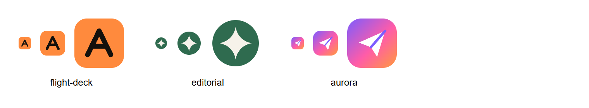
1 · Flight Deck
A cockpit for the job search: precise, calm, instrument-grade. Dark first, one signal-amber accent, monospace labels like flight instruments. Closest to Linear and Raycast.
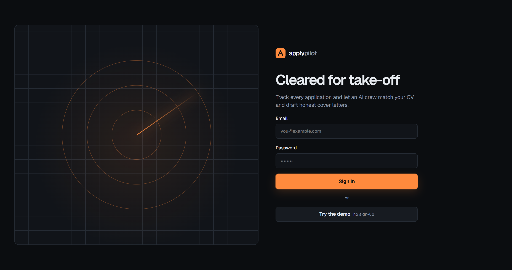
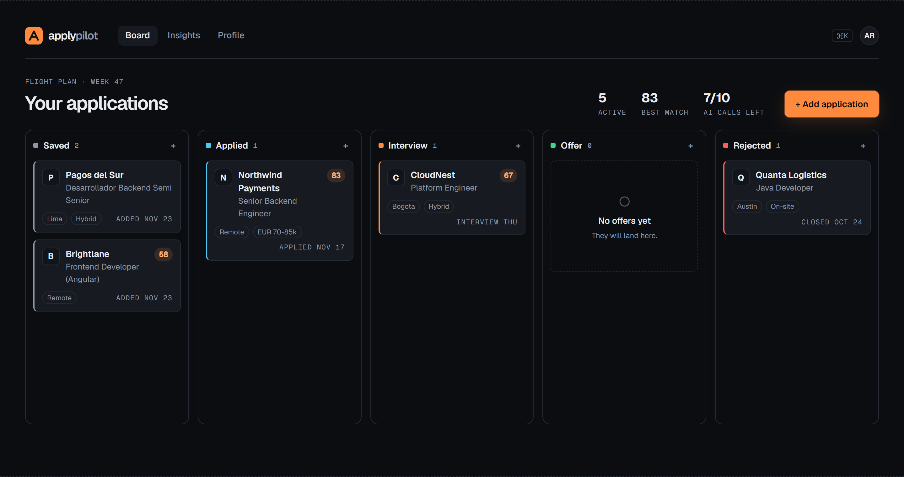
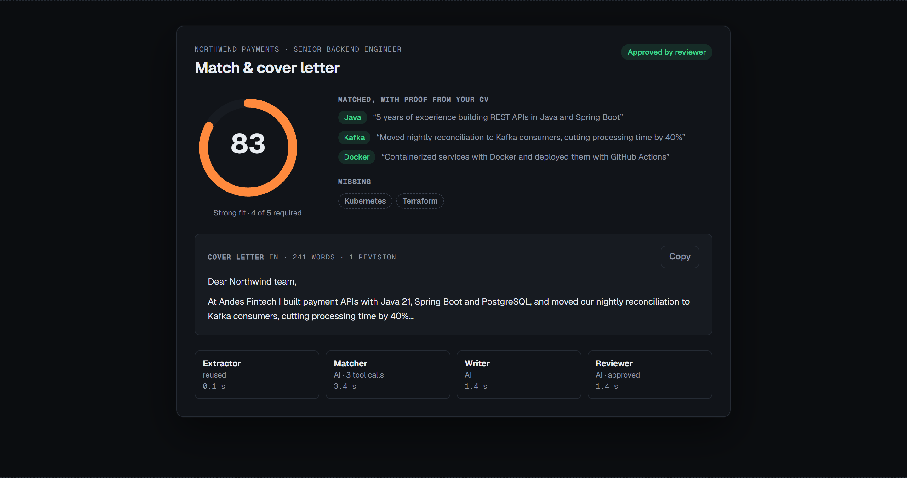
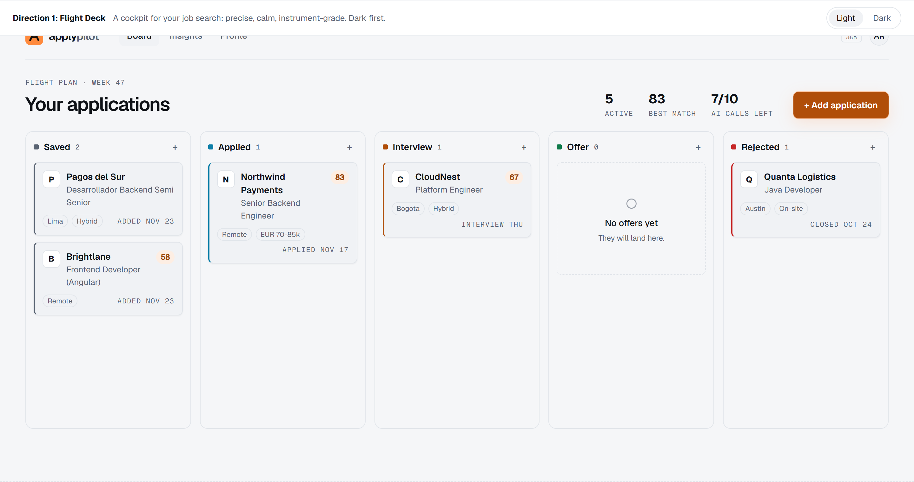
2 · Field Notes
A career journal rather than a dashboard: warm paper, serif headlines, ink-green accents, generous spacing. Human and trustworthy, the opposite of "generic SaaS". Light first.
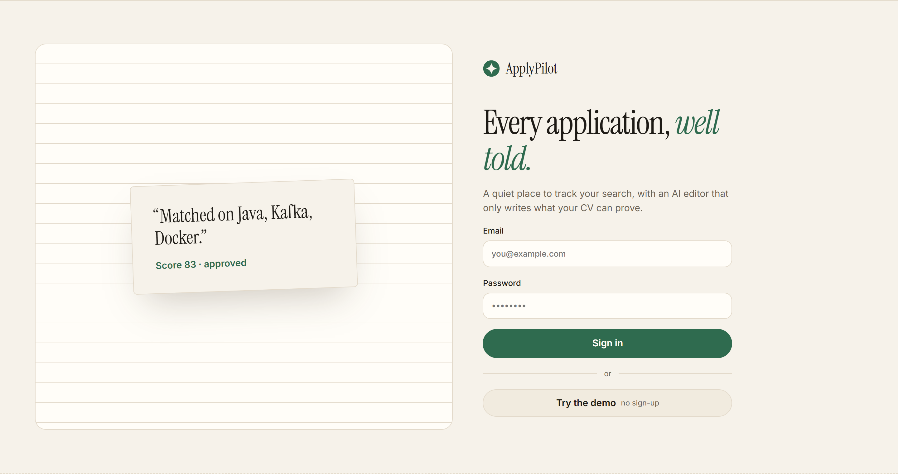
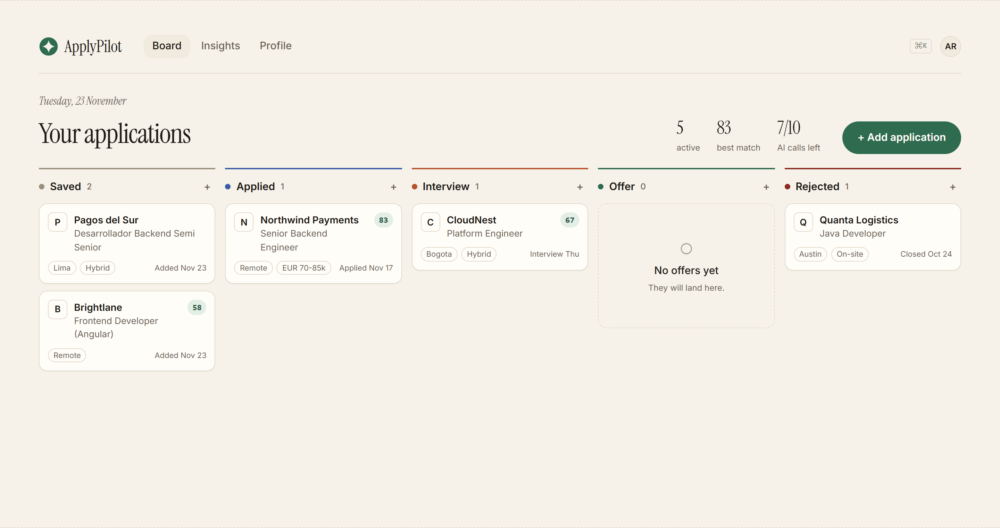
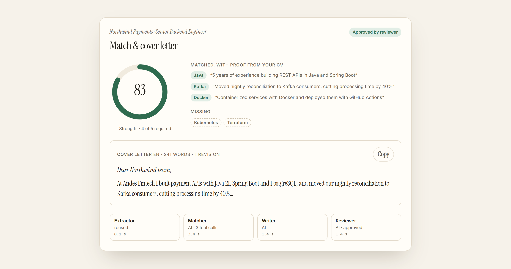
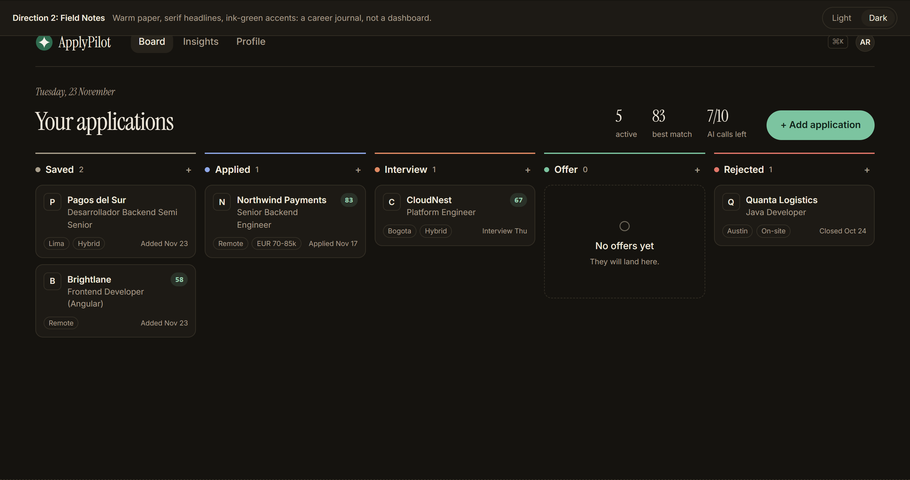
3 · Aurora
AI-native and energetic: deep indigo, a violet-pink-orange gradient used as light (glows, rings, headlines), glass surfaces. The most "wow" on a portfolio, and the busiest. Dark first.
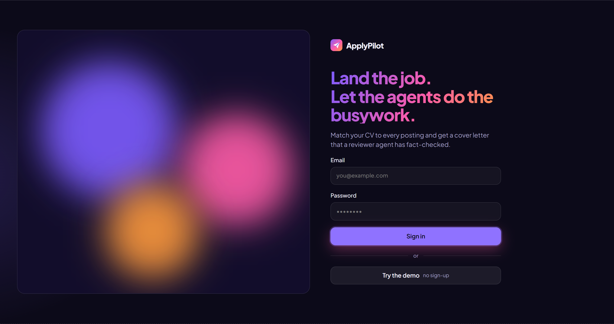
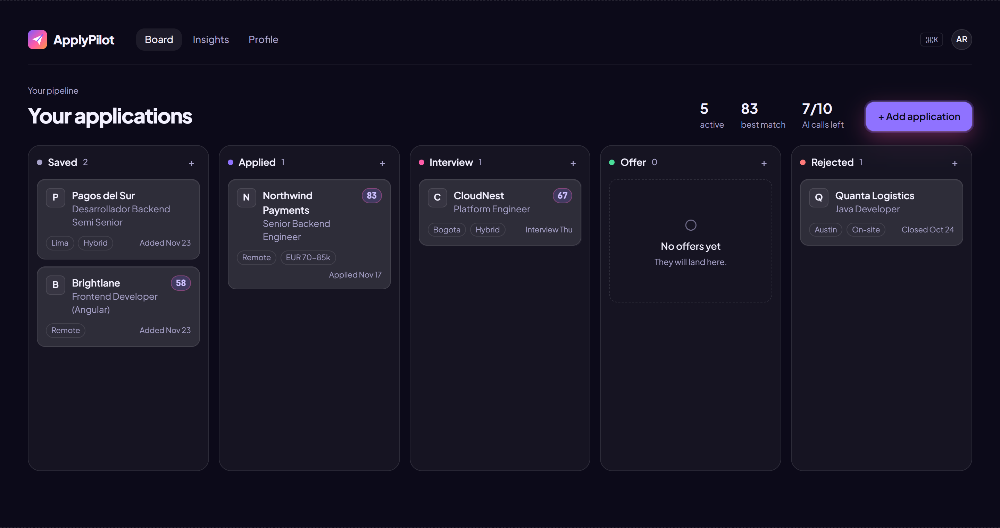
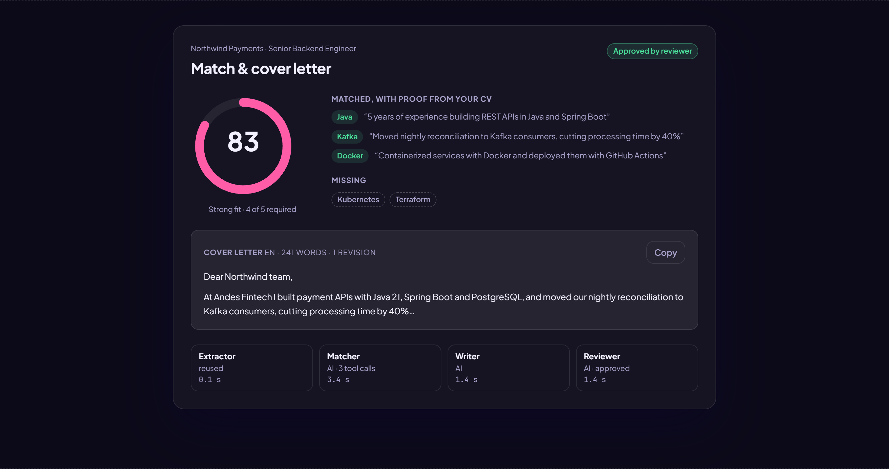
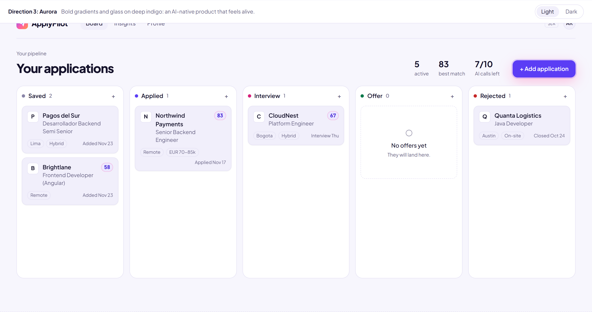